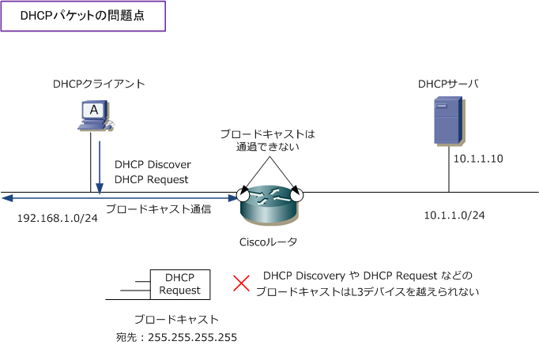
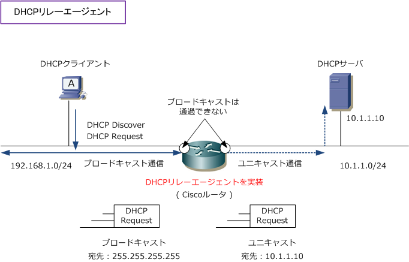

DHCP Relay Agent
DHCPリレーエージェント
DHCPサーバとDHCPクライアントとの通信ではブロードキャストアドレスが使用されるので、DHCPサーバと DHCPクライアントは同じネットワーク（サブネット）にいる必要があります。が、現在のLANネットワークは 多くのサブネットが存在し、そのサブネットをルータやL3スイッチで分離しています。ルータやL3スイッチは ブロードキャストを通過させないのでDHCP環境を構築したい場合、サブネットごとにDHCPサーバを導入する 必要がありますが、コスト的に現実的ではありません。そこで、DHCPリレーエージェント機能が役立ちます。

DHCPリレーエージェント機能により、DHCPサーバとDHCPクライアントが異なるサブネットに存在しても DHCPクライアントから受信したブロードキャストをユニキャストに変換して、DHCPサーバに転送します。 現在では、ルータやL3スイッチのネットワーク機器でDHCPリレーエージェント機能を持たせるのが一般的。

← DHCPとは